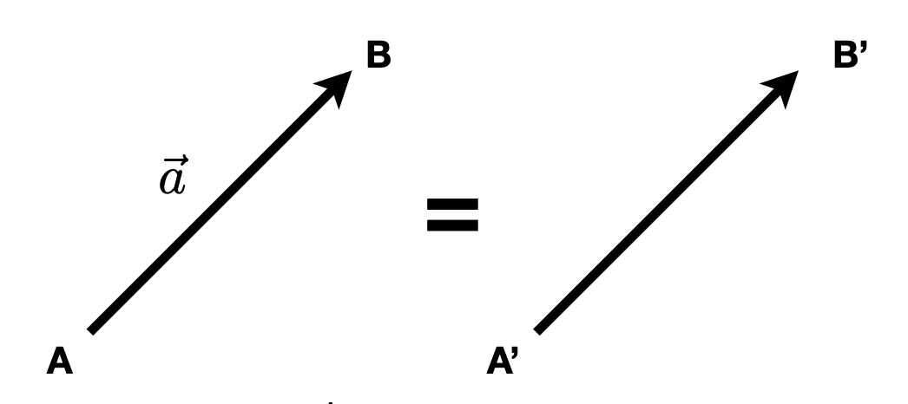
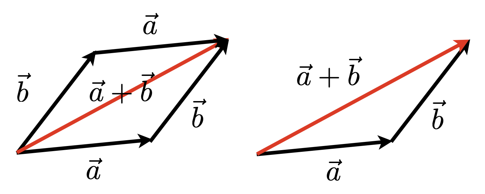
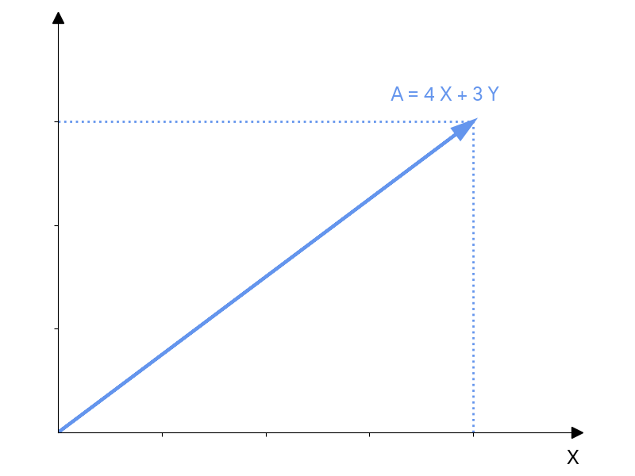
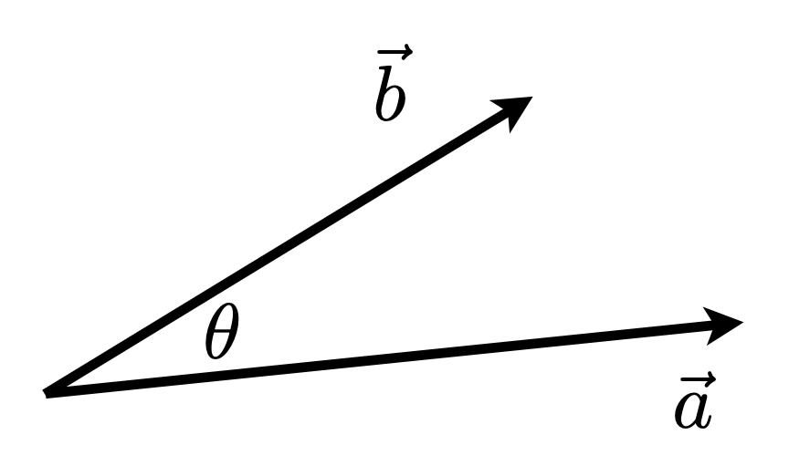
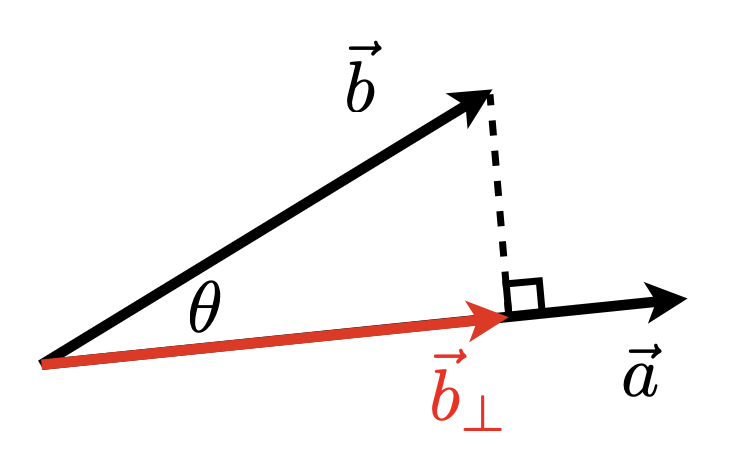
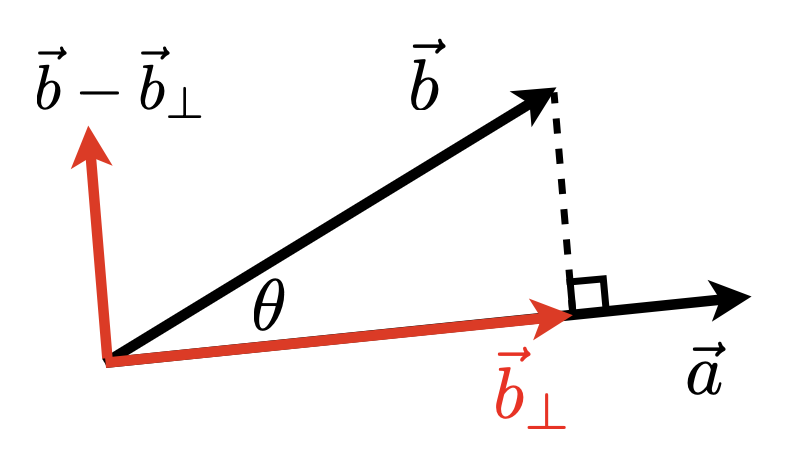
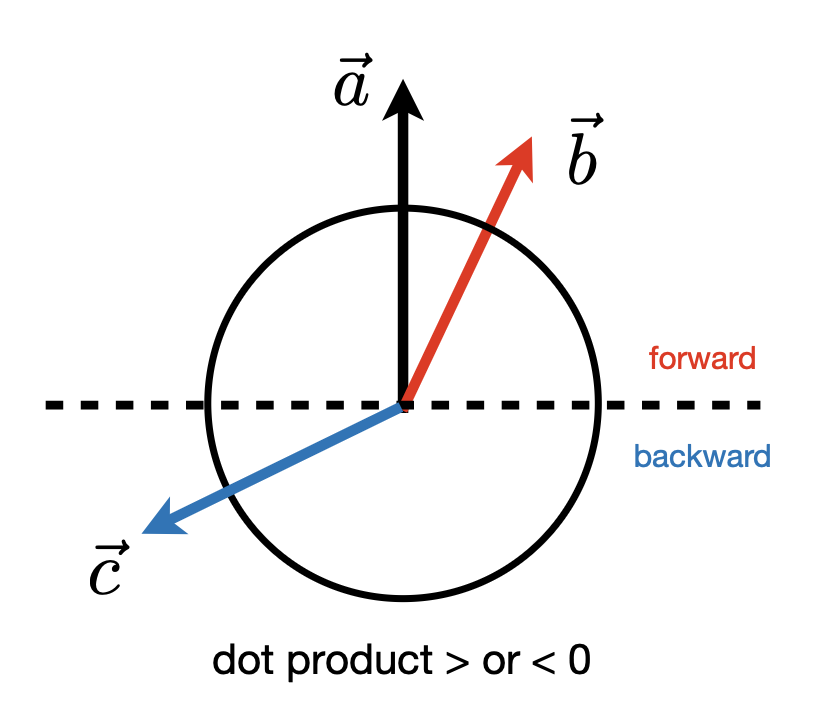
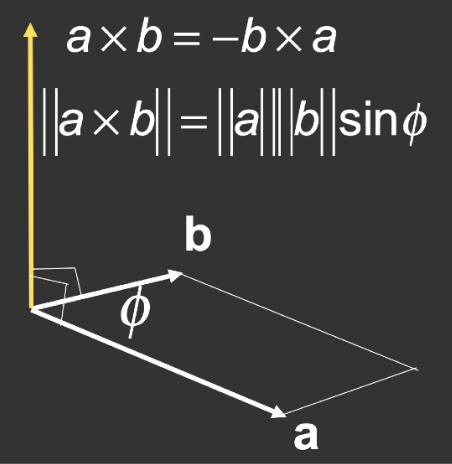
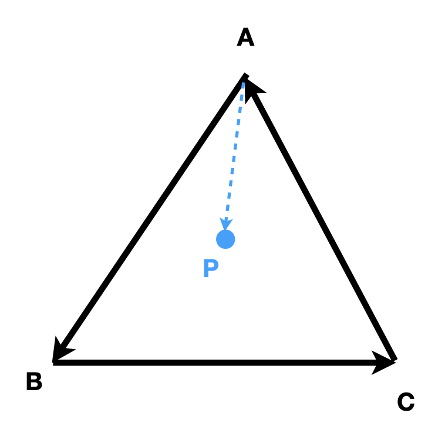

Linear Algebra
本讲简单回顾一下在高中和大学就学过的有关线性代数的一些知识，难度不大，包括：
- 向量：点积，叉积，...
- 矩阵：矩阵-矩阵，矩阵-向量乘法，...
相关的例子有：
- 一个点可以用一个向量表示
- 对物体的平移(translation)或旋转(rotation)操作能被表示成矩阵-向量乘法
Vectors
向量的定义：

- 通常写作 \(\vec{a}\)，粗体 \(\vec{a}\)，或用起始和终止断点表示 \(\overrightarrow{AB} = B - A\)
- 能同时表示方向和长度
- 没有绝对的起始位置
向量的归一化(normalization)：
- 向量的大小(magnitude)（长度）写作 \(\|\vec{a}\|\)
- 单位向量(unit vector)：大小为 1 的向量
- 计算任意非零向量的单位向量：\(\hat{a} = \vec{a} / \|\vec{a}\|\)
- 一般用于表示方向
向量加法：
-
几何上，平行四边形法则或三角形法则

-
代数上，就是坐标的相加
笛卡尔坐标系(Cartesian coordinates)

- \(X, Y\) 可以是任意的（但通常是正交的(orthogonal)单位(unit)）向量
Vector Multiplication
Dot Product

注
GAMES101 课程考虑的都是右手坐标系，比如 OpenGL。但像 Unity 等 API 是左手坐标系，所以实际运用时需要留心。
- \(\vec{a} \cdot \vec{b} = \|\vec{a}\|\|\vec{b}\| \cos \theta\)
- \(\cos \theta = \dfrac{\vec{a} \cdot \vec{b}}{\|\vec{a}\|\|\vec{b}\|}\)
- 对于单位向量，\(\cos \theta = \hat{a} \cdot \hat{b}\)
-
性质：
- \(\vec{a} \cdot \vec{b} = \vec{b} \cdot \vec{a}\)
- \(\vec{a} \cdot (\vec{b} + \vec{c}) = \vec{a} \cdot \vec{b} + \vec{a} \cdot \vec{c}\)
- \((k\vec{a}) \cdot \vec{b} = \vec{a} \cdot (k\vec{b}) = k(\vec{a} \cdot \vec{b})\)
-
在笛卡尔坐标系中：逐元素相乘再相加
- 2D：\(\vec{a} \cdot \vec{b} = \begin{pmatrix}x_a \\ y_a\end{pmatrix} \cdot \begin{pmatrix}x_b \\ y_b\end{pmatrix} = x_a x_b + y_a y_b\)
- 3D：\(\vec{a} \cdot \vec{b} = \begin{pmatrix}x_a \\ y_a \\ z_a\end{pmatrix} \cdot \begin{pmatrix}x_b \\ y_b \\ z_b\end{pmatrix} = x_a x_b + y_a y_b + z_a z_b\)
-
在图形学中的应用
- 计算两向量间的夹角，比如计算光源和曲面之间夹角的余弦值
-
计算一个向量在另一个向量上的投影(projection)
- \(\vec{b}_\perp\)：\(\vec{b}\) 在 \(\vec{a}\) 上的投影
- \(\vec{b}_\perp\) 必须和 \(\vec{a}\)（或 \(\hat{a}\)）在同一直线上
- 大小 \(k = \|\vec{b}_\perp\| = \|\vec{b}\| \cos \theta\)

- \(\vec{b}_\perp\)：\(\vec{b}\) 在 \(\vec{a}\) 上的投影
-
测量两个方向的相近程度（比如余弦相似度）
-
分解向量

-
确定向量朝前还是朝后

Cross Product

- 叉积(cross product)和两个初始向量正交
- 通过右手螺旋定则确定叉积向量的方向
- 有助于构建坐标系
- 性质：
- \(\vec{x} \times \vec{y} = +\vec{z}, \vec{y} \times \vec{x} = -\vec{z}\)
- \(\vec{y} \times \vec{z} = +\vec{x}, \vec{z} \times \vec{y} = -\vec{x}\)
- \(\vec{z} \times \vec{x} = +\vec{y}, \vec{x} \times \vec{z} = -\vec{y}\)
- \(\vec{a} \times \vec{b} = -\vec{b} \times \vec{a}\)（注意负号）
- \(\vec{a} \times \vec{a} = \vec{0}\)
- \(\vec{a} \times (\vec{b} + \vec{c}) = \vec{a} \times \vec{b} + \vec{a} \times \vec{c}\)
- \(\vec{a} \times (k\vec{b}) = k(\vec{a} \times \vec{b})\)
- 笛卡尔公式：\(\vec{a} \times \vec{b} = A^* \vec{b} = \begin{pmatrix}0 & -z_a & y_a \\ z_a & 0 & -x_a \\ -y_a & x_a & 0\end{pmatrix} \begin{pmatrix}x_b \\ y_b \\ z_b\end{pmatrix} = \begin{pmatrix}y_a z_b - y_b z_a \\ z_a x_b - x_a z_b \\ x_a y_b - y_a x_b\end{pmatrix}\)
- 在图形学中的应用：
- 确定向左还是向右
- 举例：如果 \(\vec{b}\) 在 \(\vec{a}\) 的左侧，那么 \(\vec{a} \times \vec{b}\) 的结果是正的（对于右手坐标系）
- 确定向内还是向外
-
举例：如何证明 \(P\) 点是在三角形的内部？

假定三角形三条边对应的向量按逆时针方向排列。先看 \(\overrightarrow{AB}\) 和 \(\overrightarrow{AP}\)，\(\overrightarrow{AB} \times \overrightarrow{AP}\) 的结果是垂直纸面向外的，因此 \(P\) 点在 \(AB\) 的左侧。同理可得 \(P\) 点也在 \(BC, CA\) 的左侧，因此 \(P\) 点在三角形内部。
如果向量是沿顺时针方向排列的话，那么 \(P\) 点就在三条向量的右侧。所以只要 \(P\) 点在三条向量的同一侧，就能说明 \(P\) 在三角形内部。
-
- 确定向左还是向右
Orthonormal Bases and Coordinate Frames
- 对表示点和位置而言很重要
- 通常有很多组坐标系
- 关键问题是在这些系统/基内转换（下一讲介绍）
-
任意一组满足以下条件的三个向量（3D）可用于定义一个坐标系
\[ \|\vec{u}\| = \|\vec{v}\| = \|\vec{w}\| = 1 \\ \vec{u} \times \vec{v} = \vec{v} \times \vec{w} = \vec{u} \times \vec{w} = 0 \\ \vec{w} = \vec{u} \times \vec{v} \quad \text{right-handed} \]在这个坐标系上的任意向量 \(\vec{p} = \underbrace{(\vec{p} \times \vec{u})}_{\text{projection}} \vec{u} + (\vec{p} \times \vec{v}) \vec{v} + (\vec{p} \times \vec{w}) \vec{w}\)
Matrices
- 几乎所有 CS 的课都会涉及到矩阵（2维数组）
- 在图形学中，矩阵普遍用于表示变换(transformations)，包括平移、旋转、剪切、缩放等（具体细节请见下一讲）
- 矩阵是一个 \(m \times n\)（\(m\) 行 \(n\) 列）的数组
- 带标量的加法和乘法是很简单的——逐元素做
-
矩阵-矩阵乘法：\(A \times B\) 中，\(A\)（大小为 \(M \times N\)）的列数必须和 \(B\)（大小为 \(N \times P\)）的行数相等（结果大小为 \(M \times P\)）
\[ \begin{pmatrix}1 & 3 \\ 5 & 2 \\ 0 & 4\end{pmatrix} \begin{pmatrix}3 & 6 & 9 & 4 \\ 2 & 7 & 8 & 3\end{pmatrix} = \begin{pmatrix}9 & 27 & 33 & 13 \\ 19 & 44 & 61 & 26 \\ 8 & 28 & 32 & 12\end{pmatrix} \]- 乘积中元素 \((i, j)\) 是 \(A\) 的第 \(i\) 行和 \(B\) 的第 \(j\) 列的点积
- 性质：
- 无交换律，\(AB\) 和 \(BA\) 一般是不同的
- 结合律和分配律
- \((AB)C = A(BC)\)
- \(A(B+C) = AB + AC\)
- \((A+B)C = AC + BC\)
-
矩阵-向量乘法
- 将向量看作是一个只有一列的矩阵（\(m \times 1\)）
-
变换点的关键（下一讲介绍），比如关于 \(y\) 轴的 2D 反射
\[ \begin{pmatrix}-1 & 0 \\ 0 & 1\end{pmatrix} \begin{pmatrix}x \\ y\end{pmatrix} = \begin{pmatrix}-x \\ y\end{pmatrix} \]
-
矩阵转置(transpose)
-
交换行和列（\(ij \rightarrow ji\)）
\[ \begin{pmatrix}1 & 2 \\ 3 & 4 \\ 5 & 6\end{pmatrix}^T = \begin{pmatrix}1 & 3 & 5 \\ 2 & 4 & 6\end{pmatrix} \] -
性质：\((AB)^T = B^T A^T\)
-
-
单位矩阵(identity matrix)：主对角线（左上 -> 右下）上的元素均为1，其他元素均为0
\[ I_{3 \times 3} = \begin{pmatrix}1 & 0 & 0 \\ 0 & 1 & 0 \\ 0 & 0 & 1\end{pmatrix} \] -
矩阵的逆(inverses)
- \(AA^{-1} = A^{-1}A = I\)
- \((AB)^{-1} = B^{-1} A^{-1}\)
-
向量乘法的矩阵形式
-
点积
\[ \begin{align*} & \vec{a} \cdot \vec{b} = \vec{a}^T \vec{b} \\ = & \begin{pmatrix}x_a & y_a & z_a\end{pmatrix} \begin{pmatrix}x_b \\ y_b \\ z_b\end{pmatrix} = (x_a x_b + y_a y_b + z_a z_b) \end{align*} \] -
叉积
\[ \vec{a} \times \vec{b} = A^* \vec{b} = \underbrace{\begin{pmatrix}0 & -z_a & y_a \\ z_a & 0 & -x_a \\ -y_a & x_a & 0\end{pmatrix}}_{\text{dual matrix of vector } \vec{a}} \begin{pmatrix}x_b \\ y_b \\ z_b\end{pmatrix} \]
-
评论区